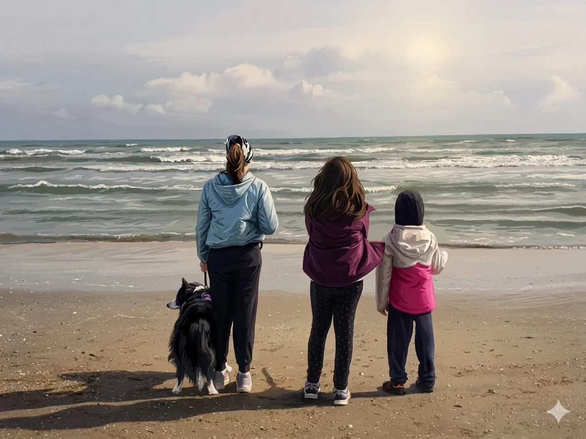
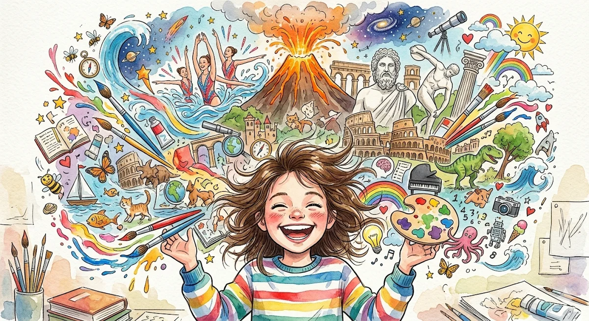
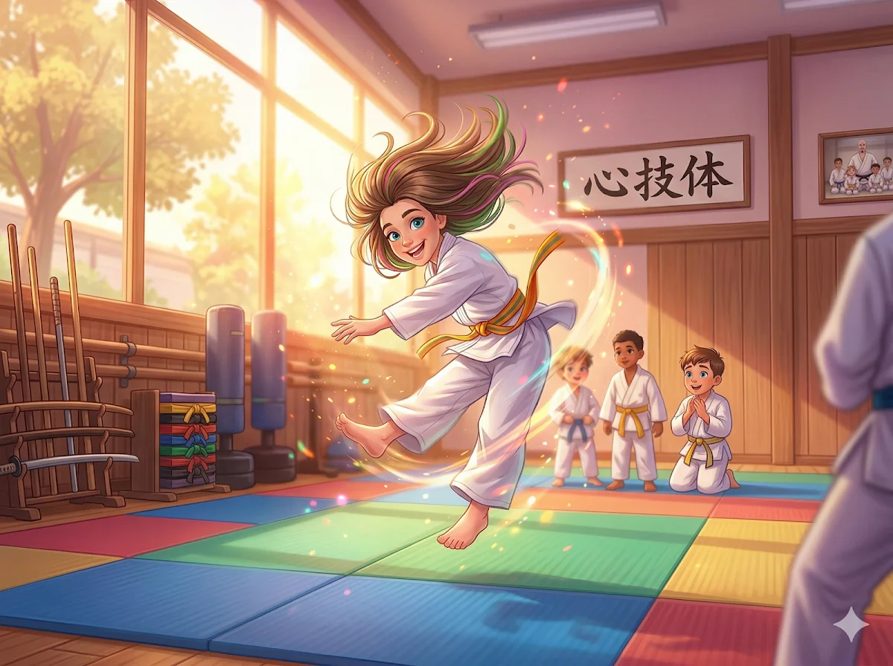
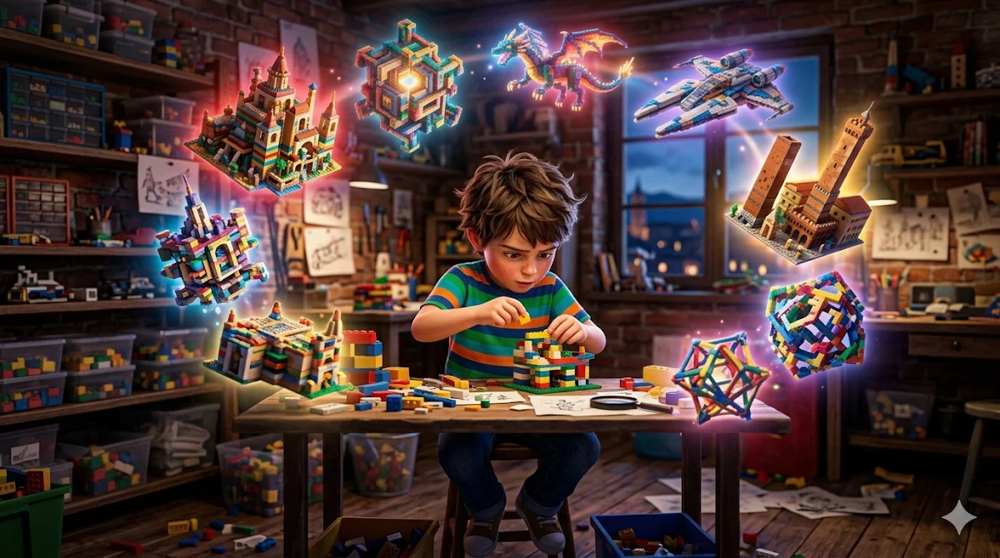
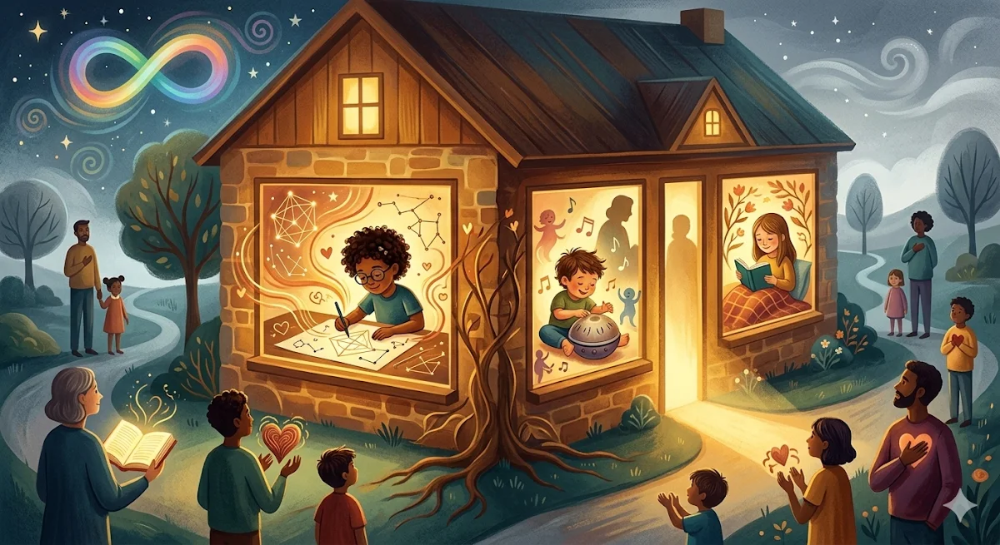

Una volta ho raccontato ai miei figli un episodio in cui mi avevano "presa, messa in padella e fatta alla brace". Federico era sconvolto: "Mamma, ma tu dovevi essere molto piccola, perché adesso in una padella non ci stai mica!"
Ecco. Loro tre prendono tutto alla lettera, e a me fa ridere ogni volta.
Te li presento: Beatrice, Ginevra e Federico. Sono il motivo per cui mi invento i materiali, il motivo per cui racconto le nostre storie e, soprattutto, il motivo per cui la mia vita non è mai noiosa.

Prima di tutto, la fantasia
Se dovessi scegliere una cosa sola che li accomuna tutti e tre, direi la fantasia. Potrebbero passare la giornata davanti alla tv. Ma a schermi spenti si trasformano: stanno ore e ore a inventare scenari assurdi e divertenti, anche senza un giocattolo in mano.
Con la lettura, invece, ognuno ha preso la sua strada. I libri, a dire il vero, non li aprono mai. I fumetti sì. Federico ormai ama leggere, e legge benissimo. E Beatrice, se una cosa l'ha scritta la mamma, la legge tutta: favole, fumetti, graphic novel, romanzi. È la mia correttrice di bozze ufficiale.
E tutti e tre adorano che sia io a leggere per loro. Meno male che esistono gli audiolibri, altrimenti passerei le giornate a leggere ad alta voce qualsiasi cosa!
Beatrice, che crea mondi in viola
Beatrice ha una creatività che non finisce mai, e guardarla mentre dà vita al suo mondo è uno spettacolo. Adora il viola, fa nuoto sincronizzato ed è molto coinvolta nella vita della parrocchia, anche se io e Francesco ce ne siamo un po' allontanati.
L'adolescenza sta bussando alla porta. Parlare con lei è diventato più difficile, e le emozioni le esplodono dentro all'improvviso, senza preavviso. Per me capirle è una bella sfida. Ma è un'esplosione di vita, ed è una meraviglia.
Quando mi sono rotta due dita, a cena le ho chiesto di aprirmi una bottiglia. Si è commossa: era felicissima di potermi finalmente aiutare, come io ho aiutato lei per tutta la vita.

Ginevra, il nostro sole (e il nostro terremoto)
Ginevra porta la gioia e le risate in ogni angolo di casa. Non sta mai ferma: è un uragano che gira per le stanze, sbatte dappertutto e ogni tanto rompe qualcosa. Mai per cattiveria: è che si muove di continuo e non guarda dove va.
Ultimamente, davanti a un "no", la tristezza fa fatica a regolarla. Allora le ricordo, scherzando, che è una bambina e non un gattino: non serve miagolare, basta chiedere con calma e con rispetto. E lei si ricentra, ci riprova, e ogni volta va un po' meglio.
Ogni mattina si intrufola nel lettone per dieci minuti di coccole, anche adesso che è grande e grossa. Ci stringiamo forte, ci raccontiamo i sogni e il programma della giornata. Sono dieci minuti preziosi, che ci fanno partire tutte e due con il piede giusto.

Federico, il nostro marmottino
Federico adora i Lego, Minecraft, i dinosauri e i vulcani. È capace di parlarne per ore, e molto spesso prova a coinvolgere anche gli sconosciuti, in spiaggia o al parco. Armato delle sue cuffie antirumore riesce ad affrontare quasi ogni difficoltà.
E poi c'è il judo, che fa insieme a Ginevra. Il judo di Federico ha sorpreso tutti, e me per prima. È uno sport di contatto: mai avrei pensato che lo avrebbe amato, proprio lui che per affrontare il mondo ha bisogno delle sue cuffie. E invece, in un dojo accogliente e attento alle sue caratteristiche, per lui è stato terapeutico. Mi ha insegnato che, prima ancora dello sport, conta il posto: conta chi ti accoglie quando entri, e quanto è disposto a guardarti per come sei.
Disegna di continuo. Ho la casa invasa dai suoi disegni: ci siamo noi, quello che abbiamo fatto, quello che faremo, quello che desidera. Vedere i suoi sogni sulla carta è bellissimo.

Vanno bene così
Non te la racconto tutta rosa. Fuori casa le loro neurodivergenze rendono difficili tante relazioni, e la fatica di stare insieme agli altri si vede. A casa si sentono accettati e rispettati. Fuori quel rispetto non lo trovano sempre, e io mi sento in colpa. Eppure una soluzione la trovano ogni volta, e riescono a costruire amicizie belle e profonde.
Io e Francesco vogliamo che sappiano una cosa: vanno bene così. Il mondo non è ancora pronto per i neurodivergenti, ma noi sì. Vogliamo insegnare loro a essere gentili fuori, e a essere se stessi quando siamo tra noi. E che un mondo diverso, se lo vogliamo, tocca a noi costruirlo.
I miei figli non sono "speciali", non sono "eccezionali" e non sono supereroi. Sono bambini che sentono e rielaborano il mondo a modo loro, proprio come fanno gli adulti neurodivergenti. Un modo giusto e un modo sbagliato di capire le cose non esistono: esiste il modo di ognuno.
Non c'è nessun mostro da combattere. Ci sono persone da capire.

La domanda di oggi: qual è la cosa che tuo figlio ha preso alla lettera, e che ti fa ancora ridere?
A presto!